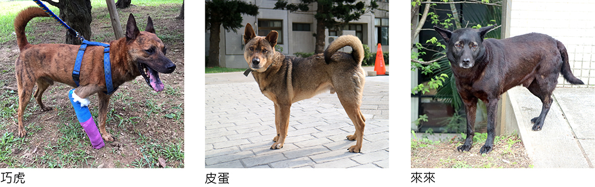

常見Ｑ＆Ａ
Ｑ1：我很喜歡學校的狗，我可以帶他們回家嗎？
Ａ：學校裡的每一隻狗都可以認養。清大也有同學因為跟狗狗感情很好，而將校園裡面的狗狗認養回家。只要經過懷生社評估，確定居家環境及家庭都適合養狗，同時你也有一顆對狗狗不離不棄的心，就可以簽署認養同意書喔！我們也鼓勵同學們把狗狗認養回家，給他們一個溫暖的家。
Ｑ2：在學校周遭撿到傷犬／幼犬，可以請懷生社幫忙嗎？
Ａ：懷生社的人力、資金都有限，無法照顧校園範圍以外的犬貓。我們只能從旁提供口頭上的指導、或是幫忙轉貼認養文等，無法收編狗狗、或是提供寄宿喔！
Ｑ3：撿到松鼠／鴿子／烏龜……懷生社可以幫忙嗎？
A：當您撿到這些野生動物，懷生社只能提供動物醫院的地址，其餘的部分則無法提供協助喔！除此之外，未具有相關知識，請勿隨意撿未受傷或還是幼體的野生動物，沾染人類味道的幼體可能遭媽媽遺棄，也可能使自己受傷！
Ｑ4：有狗狗自動坐上我的機車怎麼辦？
Ａ：當狗狗亂上車的時候，只要輕拉牠的項圈，或是用食物引誘牠下車即可。
Ｑ5：有狗狗躺在我的包包上怎麼辦？
Ａ：當狗狗躺在您的物品上時，可以用食物引誘其離開，手邊沒有食物的話可以摩擦塑膠袋假意餵食。或是也可以用雨傘阻隔與狗狗的視線，再趁機把物品移開。
Ｑ6：懷生社需要經費或物資嗎？
Ａ：我們照顧狗狗的費用，部分由學校補助，部分透過募款的方式募得足夠款項。狗狗的醫療、照顧費十分龐大，我們也歡迎各界捐款，一起幫忙這群狗狗。如果您有多餘的被單、舊衣服、飼料、運輸籠、狗狗用品……等，都可以捐給我們喔！
校浪Ｑ＆Ａ
Ｑ7：化工館的吊吊為什麼沒有毛？牠的前腳是不是受傷了？
Ａ：吊吊的皮膚狀況差是因為對跳蚤過敏，此過敏無法根治，只能靠降低被跳蚤叮咬來阻止過敏的發生，不過吊吊並不親人，我們很難幫他除蚤，長期下來，不斷地過敏，毛髮便有脫落的狀況。而吊吊的腳，多年前初次發現他時，就已經是彎曲的樣子了。當時我們有帶他去看過醫生，醫生說骨折處已長出結締組織包覆，幸運的是「並不影響生活」！也就是說，只要吊吊看起來精神狀況不錯，大致上都不必太擔心喔！
Ｑ8：巧虎、皮蛋與來來，走路怎麼有點怪怪的？
Ａ：巧虎跟皮蛋的腳之前因為骨折動過手術，所以走起路來會有點怪怪的，只要他們不會痛就沒有太大的問題。來來的腳初次發現他時就已經是那樣了，不確定原因，但是對他現在的生活沒有太大影響，大家不用特別擔心喔！
Ｑ9：我看到丁丁倒在地上不斷抽蓄，我該怎麼幫她？
Ａ：丁丁以前得過犬瘟，留下了後遺症，有時候會突然倒地抽蓄、口吐白沫、大小便失禁，可以在現場觀察一下，等她發作完確認沒事即可，也可以通報社團，讓我們了解一下丁丁的狀況。
Ｑ10：小豬的尾巴為什麼沒有毛？
Ａ：小豬的尾巴是甲狀腺素低落造成的禿毛現象，她還有腎結石的問題，大家可以多餵她喝水喔！
Ｑ11：如果要捐款給懷生社幫助狗狗們，我該怎麼做？
◆若你想幫助狗狗們，可以捐款 / 捐物資 ( 飼料、罐頭等 )給我們，資金和物資將全數用在校浪身上
關懷生命社郵局戶口：
帳號 / 0061021 0605612
戶名 / 國立清華大學關懷生命社
( 可以 ATM 轉帳 )
台灣銀行新竹分行：
帳號 / 015036070041
戶名 / 國立清華大學 401 專戶
(須臨櫃匯款，並指名捐給清大關懷生命社 )